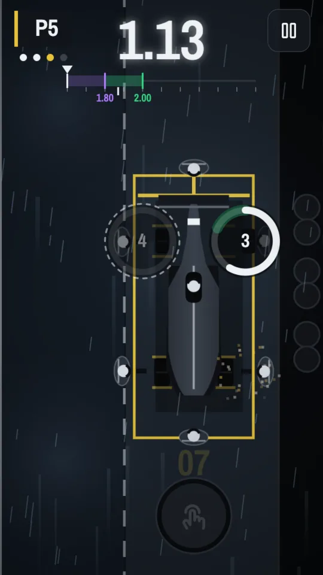
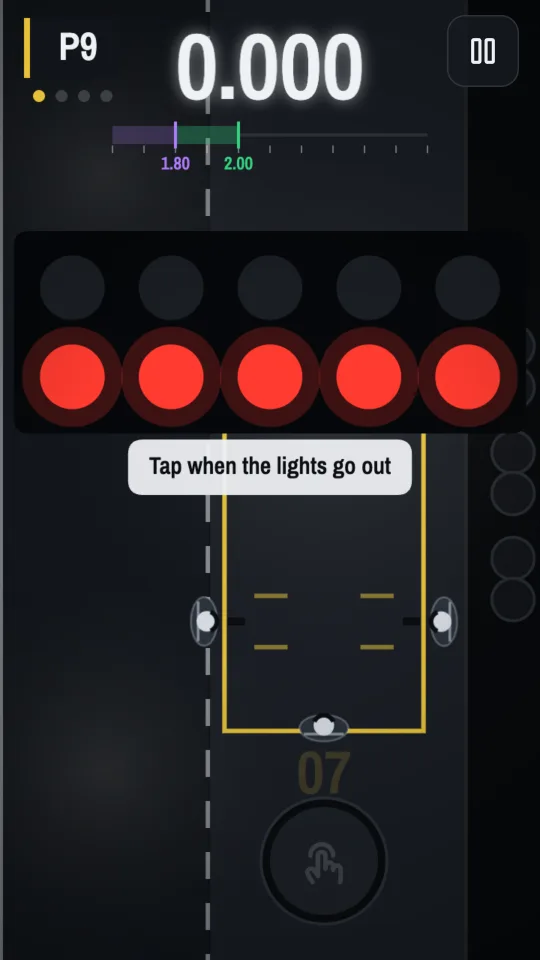
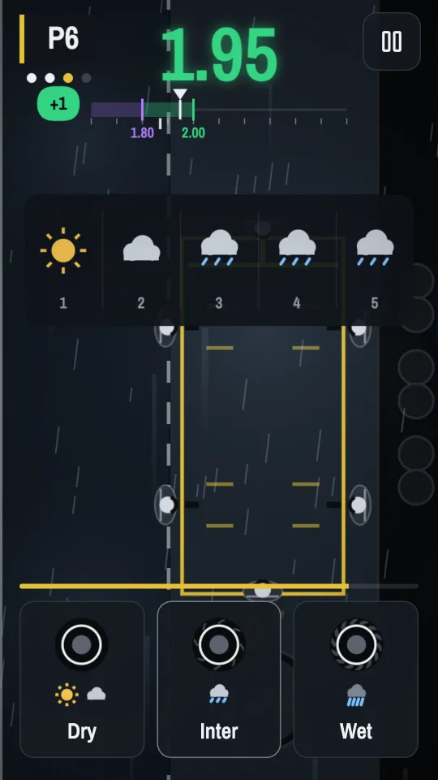
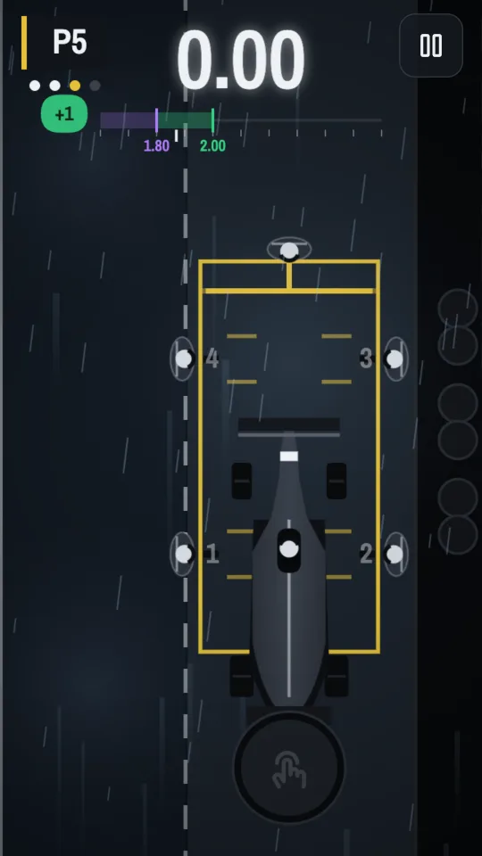
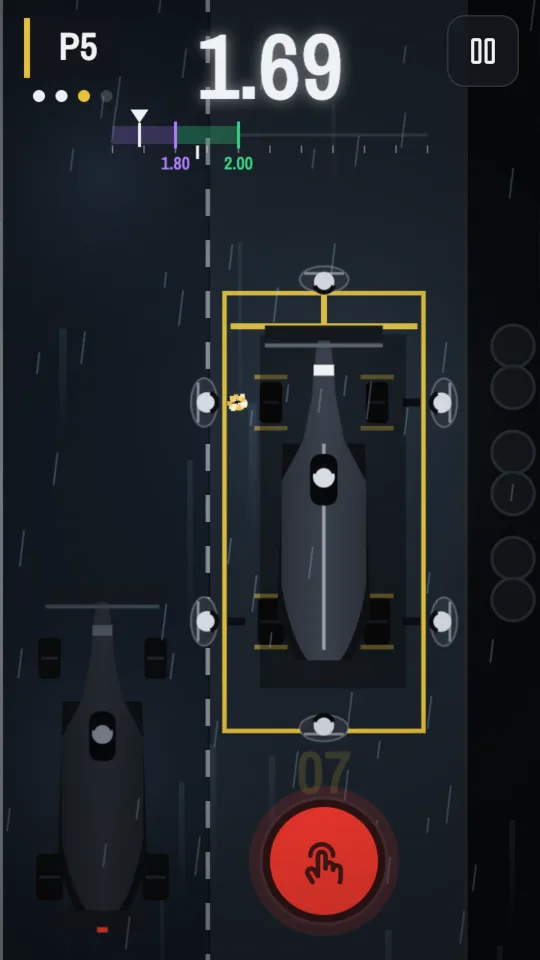
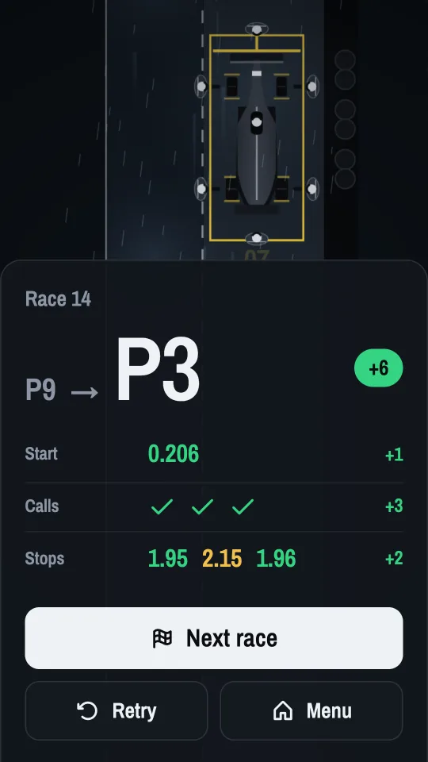
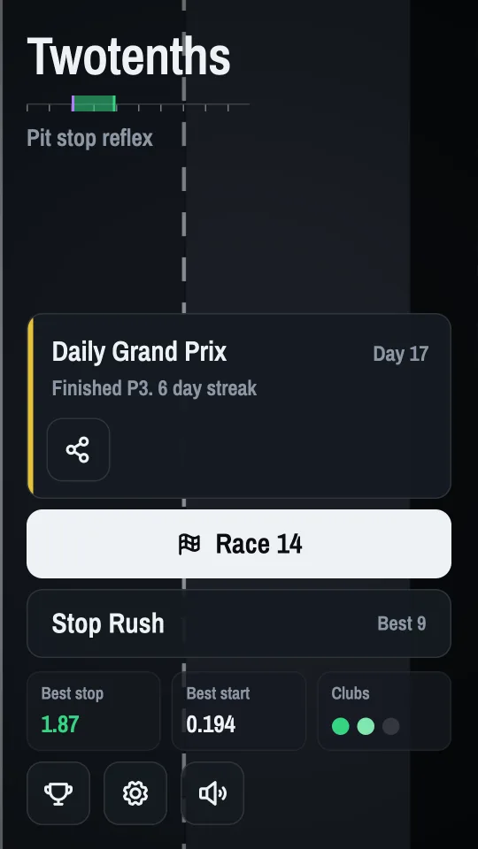
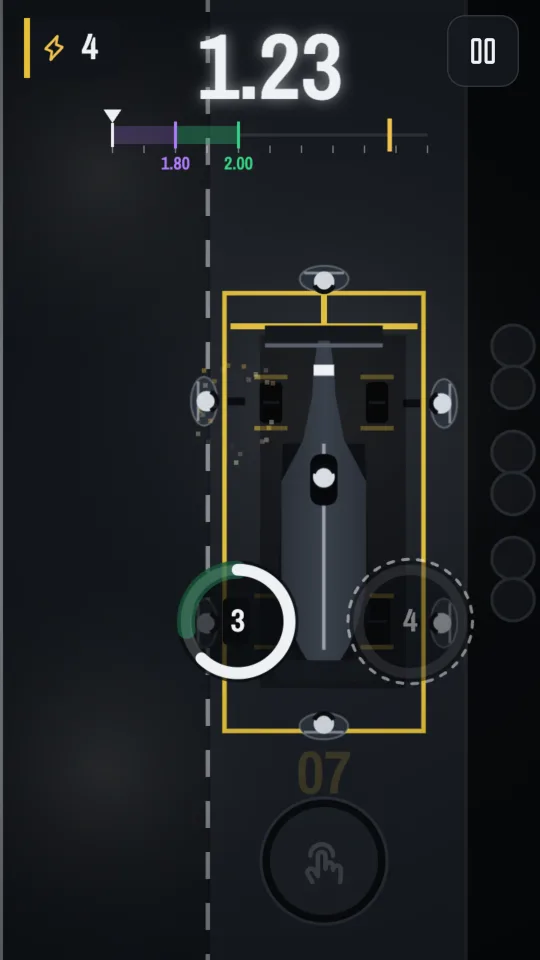

Two tenths of a second.
One thumb, four wheels and a stopwatch. Race through a pit stop and see how close you get to the 1.80 second record.
Free with ads. An optional one time purchase, Remove ads and archive, takes them away.

The gap is the game.
Every stop is timed to a hundredth of a second against a ruler. Under 2.00 puts you in the club. 1.80 is the fastest pit stop on record. Everything in between is two tenths of practice.
A race in eight screens.
A race is a lights out start and three stops, about thirty seconds in all. These are the real game, captured from play.







How to play
Race 1 teaches each part when you need it with a ghost thumb, and nobody can fail it. This is the same thing in writing.
Lights out
Five pairs of red lamps light one at a time. They hold for a random moment, then go out. Tap anywhere the instant they do. Your reaction is timed to the millisecond from the tap's own timestamp, so a slow frame never costs you.
Tap while the lamps are still lit and it is a jump start: five seconds are added and you lose three places. The lamps take a different time every race, so guessing does not work.
The pit wall call
Before each stop the radar shows five laps of sky: dry, damp or wet. Pick the tyre that fits the most of them. Each button shows the sky it suits: sun and cloud for Dry, drizzle for Inter, rain for Wet. A cloudy lap counts as dry.
Some calls are a safety car instead. When the board shows SC with flashing lamps, box now for a cheap stop. When it shows SC IN with dark lamps, the safety car is ending this lap, so stay out. From race 4 the call has a four second clock, and if it runs out the car keeps its current tyre.
Catch the car
The car brakes up the pit lane. Tap as its nose meets the marker line. Within 0.035 seconds is Perfect and costs nothing. Further off costs 0.06, 0.15 or 0.30 seconds. Miss the tap altogether and the car rolls long, which costs 0.40 seconds. Taps earlier than a third of a second before the marker are ignored, so an eager thumb is safe.
Gun the wheels
The stopwatch runs from the catch. Four rings light in a numbered order, one per corner. Each fills in about a third of a second. Tap a ring inside the last part of its fill and the gun finishes the nut right at the full mark. Tap before that zone and the nut cross threads: the ring flashes red, locks for a moment and falls back.
From race 4 some nuts cross thread by themselves partway through and flash red until you tap them again. Tap them as soon as you see the flash, because the clock keeps running.
Drop, hold and release
After the fourth wheel the release lamp at the bottom arms. Press and hold it to drop the jacks. Keep holding while the lamp is red: a rival is passing in the fast lane. Lift your thumb when it goes green. Lifting into a passing car is an unsafe release and adds five seconds.
The stop ends when the car moves. That is the later of your lift and the jacks touching the ground, so lifting a hair early gains nothing.
Places
You start on the grid in P9 and there is no field to beat, only the clock. Your start, your calls and your three stops each move you up or down, and the position chip updates after every part so you can feel the race build. A clean race ends around P2. A messy one ends around P13.
What each stop is worth
The stop table is the one thing worth knowing by heart. Each of your three stops moves you by this many places.
| Stop time | Places |
|---|---|
| 1.80 or under | gain 3 |
| Under 1.90 | gain 2 |
| Under 2.00 | gain 1 |
| Under 2.40 | no change |
| Under 3.00 | lose 1 |
| Under 4.50 | lose 2 |
| 4.50 or more | lose 3 |
Three ways to race
Daily Grand Prix
Everyone gets the same start, the same calls and the same three stops on the same day. You get one try. Your result is a stopwatch card with your start, your stop times and the places you gained, and it holds no spoilers for friends who have not raced yet. The link on the card opens the same race in a browser, no install needed. Race on consecutive days and your streak grows.
Stop Rush
An endless ladder of stops with no start and no calls. Each rung has a target time and the tempo rises. Beat the target to climb. Miss it, or release unsafely, and the run is over. By about the seventeenth rung the target is close to what a human hand can do, so every run ends.
Records
Your best stop, best start, best finish and best Rush run, plus three clubs: under 2.00, under 1.90 and record pace at 1.80 or under.
Tips from the pit wall
Look at the ring, not at your thumb
The next ring to tap is outlined before it starts to fill, so your thumb can already be moving. Rings sit well inside the screen on purpose, and a tap that lands nearer another ring is ignored, so you cannot hit the wrong wheel by a small slip.
Be early in the zone, not late
A tap inside the zone finishes the nut at the full mark, wherever in the zone it lands. A tap after the full mark finishes at your tap, so lateness is the only way to lose time on a ring. Aim for the front half of the zone and you give up nothing.
Spend your calm on the lamp
Most lost seconds are on the release. If a rival is coming, the lamp is red for a short, readable window. Press the lamp as soon as it arms so the jacks drop, then wait for green and lift. Never guess the gap.
Count the sky before you tap
The radar numbers its five laps from left to right. When the strip is mixed, count: the tyre that suits three of the five laps is the right call. A cloudy lap counts as dry, so do not let one cloud talk you into Inter.
Do not chase the start
A reaction under 0.200 seconds gains you two places, but a jump start loses three and adds five seconds. Tap on what you see, not on what you expect. Under 0.280 still gains a place, and anything under 0.400 costs nothing.
Race the Daily last
You get one scored try each day, so warm up on a career race or a Rush run first. Your thumb learns the rhythm within a few stops, and you only get one scored try at the daily.
Free, with ads you can mostly skip
Twotenths is free to play and has ads. Full screen ads appear only at a natural break, such as after a few finished races when you press Next race, and never during a race, between its stops or around the Daily Grand Prix. Rewarded ads are always your choice: watch one to redo your slowest stop, to carry on a Stop Rush run or to race today's daily once more.
Remove ads and archive is an optional one time purchase in the Android app, made through Google Play. It removes the ads for good, opens every past Daily Grand Prix and gives the rewarded bonuses without an ad. The web version at apps.mohdshayan.com/twotenths/play/ shows ads from Google AdSense and has no purchases. How the data works is in the privacy policy.
Questions
Does it work offline?
Yes. The game is packaged inside the app and needs no network to play. Ads, the purchase and the consent message need a connection, and without one the game simply plays on without them.
Is the 1.80 second record real?
It is the fastest pit stop on record at the time of writing, and the game states it as a plain fact with no team named. In the game a stop near 1.80 takes a clean catch, four tight taps and a calm release, so only a near perfect stop reaches it.
Is my progress saved?
Yes, on your device. In the app it lives in the app's storage. In the browser it lives in this site's local storage, so clearing site data clears it. There is no account and no server holding your progress.
Who is it for?
Players aged 16 and over. It is an independent game and is not connected to any racing series, team, driver or sponsor.
How do I get my purchase back on a new phone?
Open the menu and choose Restore purchases. Google Play tells the app that your Google account owns Remove ads and archive, and the app unlocks it again.